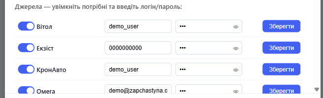

Ця сторінка існує тому, що питання «а звідки я знаю, що ви не вкрадете мої логіни» — справедливе питання. Ось повна відповідь, без розмитих фраз на кшталт «ми дбаємо про вашу безпеку».
Логіни та паролі до постачальників, які ви вводите в налаштуваннях, зберігаються в одному текстовому файлі config.json на вашому комп'ютері — в тій самій папці, куди встановилась програма. Цей файл ніколи нікуди не завантажується. Хочете переконатись самі — відкрийте його блокнотом.

Коли ви шукаєте запчастину, запит іде напряму з вашого комп'ютера на сайт того постачальника, чий логін використовується — так само, якби ви самі відкрили цей сайт у браузері. Через наші сервери ці дані не проходять.
Єдиний виняток — коротка перевірка діючої ліцензії. Раз на кілька годин програма надсилає на сервер ліцензій знеособлений відбиток вашого комп'ютера, номер ліцензійного ключа та версію програми:
Все. Жодних логінів постачальників у цьому запиті немає і бути не може — технічно він просто не має до них доступу. Якщо інтернету немає — програма ще 5 днів працює офлайн за останньою перевіркою.
Це не хмарний сервіс — це звичайна програма на вашому комп'ютері. Всі файли — конфігурація, логіни, кеш ліцензії — лежать поруч, у папці встановлення, звичайними текстовими файлами. Нічого прихованого.